13 Figures and tables
Figures and tables are how most scientific and technical documents communicate data and results. You often need precise control over their placement within documents, their captions, and the ability to group them into panels and cross-reference them throughout the text. Given their importance, we’ve devoted two chapters to figures and tables: this one and Chapter 14.
This chapter applies however you produce your figures and tables—whether you write them in markdown or generate them from code cells. We’ve done this on purpose, because most aspects of working with figures and tables are independent of their source. For example, document-level options that control figures and tables often apply universally, as do many layout features that involve surrounding figures or tables in additional markdown. There are a few exceptions where you’ll need to use specific attributes for markdown-based content or code cell options for computational output, and we’ll point these out clearly when they arise.
You should review Section 13.1, which explains how to translate between markdown and computational syntax for figures and tables. It also introduces what we call the fenced div syntax, which will help you understand and apply the examples used throughout the rest of both chapters.
We expect you’ll turn to these chapters to solve particular tasks with your own tables and figures. Table 13.1 points you to the relevant section.
| How do I… | See |
|---|---|
| Cross-reference a figure or table | Section 13.2 |
| Change the caption text, location, or title | Section 13.3 |
| Arrange multiple figures or tables in a panel | Section 13.4 |
| Put a figure or table in the margin, or make it wider than the text | Section 13.5.1 |
| Align a figure left, center, or right | Section 13.5.2 |
| Align or size the columns of a table | Section 13.6 |
| Control the size or aspect ratio of a computational figure | Section 14.2.2 |
| Control the format and styling of a computational table | Section 14.3 |
| Troubleshoot figure or table output from a package | Section 14.4 |
13.1 Syntax variations
13.1.1 Markdown vs computational
As you read this chapter you’ll see examples of figures and tables that are produced in two ways: directly with markdown and computationally. Figure 13.1 reminds you of the syntax for figures, and Figure 13.2 for tables.
{#fig-id fig-alt="Alternative text"}```{LANGUAGE}
#| label: fig-id
#| fig-cap: "Caption"
#| fig-alt: "Alternative text"
# Code to generate a single figure
```| Column 1 | Column 2 |
|----------|----------|
| Cell A | Cell B |
: Caption {#tbl-id}```{LANGUAGE}
#| label: tbl-id
#| tbl-cap: "Caption"
# Code to generate a single table
```The key difference is that for computational figures and tables you use code cell options to specify captions, identifiers, and alternative text. When the computational engine executes a code cell that produces a table or figure, it uses the output, along with the code cell options, to construct the same markdown you would write by hand to render a figure or table. This means for figure or table tweaks that involve setting document options, or surrounding the figure or table in additional markdown, you can swap a markdown example with a computational one and vice versa. For tweaks that involve changes to the markdown itself, like adding an attribute, you’ll usually find a corresponding code cell option for a computational output.
13.1.2 Fenced div syntax
When a figure or table is cross-referenceable (i.e., it has an identifier that starts with fig-, tbl-, or one of the other special prefixes), another syntax variant is useful—the fenced div syntax.
The fenced div syntax moves the caption and identifier outside of the image or table markdown. This provides a consistent syntax for both computational and non-computational figures and tables. For example, Figure 13.3 shows the fenced div syntax for figures.
::: {#fig-id}
{fig-alt="Alternative text"}
Caption
:::::: {#fig-id}
```{LANGUAGE}
#| fig-alt: "Alternative text"
# Code to generate a single figure
```
Caption
:::The fenced div syntax abstracts away whether the figure or table is produced in markdown or computationally. So, in the rest of this chapter and in Chapter 14, we’ll use the shorthand:
::: {#fig-id}
{ IMAGE }
Caption
:::where { IMAGE } could be a markdown image or a code cell generating a figure. Conveniently, even if you don’t replace { IMAGE }, this is valid Quarto markdown and will render like Figure 13.4.
{ IMAGE }
The same fenced div syntax applies to tables and we’ll use a similar shorthand:
::: {#tbl-id}
{ TABLE }
Caption
:::where { TABLE } could be a code cell generating a table, or a table written directly in markdown as a pipe table, list table, or HTML table in a raw HTML block.
13.2 Cross-references
You’ll start with the two required steps to cross-reference a figure or table:
Give your figure or table an identifier that Quarto recognizes as a cross-reference; that is, one that starts with
fig-ortbl-.Refer to your figure or table using the syntax
@ID.
Then, you’ll learn about creating sub-references.
This section focuses on creating and using cross-references. If you are interested in customizing the way your figures and tables are numbered or labeled, see Section 13.3.
13.2.1 Adding an identifier to a figure or table
Depending on how you create your figure or table, there are three ways to add an identifier that Quarto recognizes for cross-referencing:
- Non-computational: as an ID attribute, starting with
#, in markdown syntax - Computational: as the
labelcode cell option - Both: as an ID attribute, starting with
#, in the fenced div syntax
We illustrate each of these for figures in Figure 13.5 and for tables in Figure 13.6. The caption, and alternative text for figures, are optional, but you’ll generally include them, so our examples do too.
{#fig-id fig-alt="Alt text"}```{LANGUAGE}
#| label: fig-id
#| fig-cap: "Caption"
#| fig-alt: "Alt text"
# Code to generate a single figure
```::: {#fig-id}
{fig-alt="Alt text"}
Caption
:::::: {#fig-id}
```{LANGUAGE}
#| fig-alt: "Alt text"
# Code to generate a single figure
```
Caption
:::fig-id to a figure using (a) markdown, (b) computational code cell, (c) fenced div with markdown, and (d) fenced div with computational code cell.
| Column 1 | Column 2 |
|----------|----------|
| Cell A | Cell B |
: Caption {#tbl-id}```{LANGUAGE}
#| label: tbl-id
#| tbl-cap: "Caption"
# Code to generate a single table
```::: {#tbl-id}
| Column 1 | Column 2 |
|----------|----------|
| Cell A | Cell B |
Caption
:::::: {#tbl-id}
```{LANGUAGE}
# Code to generate a single table
```
Caption
:::tbl-id to a table using (a) markdown, (b) a computational code cell, (c) a fenced div with markdown, and (d) a fenced div with a computational code cell.
For figures and tables you’ll usually use the prefixes fig- and tbl- respectively, but see Section 12.10 for other available prefixes. For working examples of computational figures and tables with cross-references, see Chapter 14.
Quarto doesn’t care what the content of the fenced div is. You can put anything inside: an image, a code block, a tabset, a table, markdown, etc. The label prefix determines how Quarto labels it. For example, using fig- gets you a “Figure X” regardless of the content.
13.2.2 Referring to a figure or table
To refer to a figure or table, use @ followed by the identifier (Figure 13.7 (a)). When rendered, the cross-references are replaced with the figure or table counter and become links (Figure 13.7 (b)). In HTML formats, hovering on the links also shows a preview of the figure or table.
See @tbl-id.
@fig-id shows ...Cross-references are generally limited to the figures and tables within the same document. The one exception is a Quarto book project—this is your best option if cross-document (i.e., cross-chapter) cross-references are important to you. For documents in a website project, an alternative approach is to link to the figure or table identifier, as explained in Section 16.4.2.2.
13.2.3 Sub-references
Sub-references let you refer to one part of a multi-part figure or table, for example “Figure 1 (a)”. To make sub-references, nest your cross-referenceable elements inside a parent fenced div that has a caption and an identifier. The children’s identifiers must use the same prefix as the parent’s. For example, here the parent div has the identifier fig-animals and contains two markdown images, each with its own fig- identifier:
::: {#fig-animals}
{#fig-elephant fig-alt="Line drawing of an elephant."}
{#fig-panther fig-alt="Line drawing of a panther."}
Two animals.
:::Use @fig-animals to refer to the whole figure (“Figure 1”), and @fig-elephant to refer to one part (“Figure 1 (a)”). The captions of the children become sub-captions. Figure 13.8 shows the result, with a sentence that uses both cross-references.
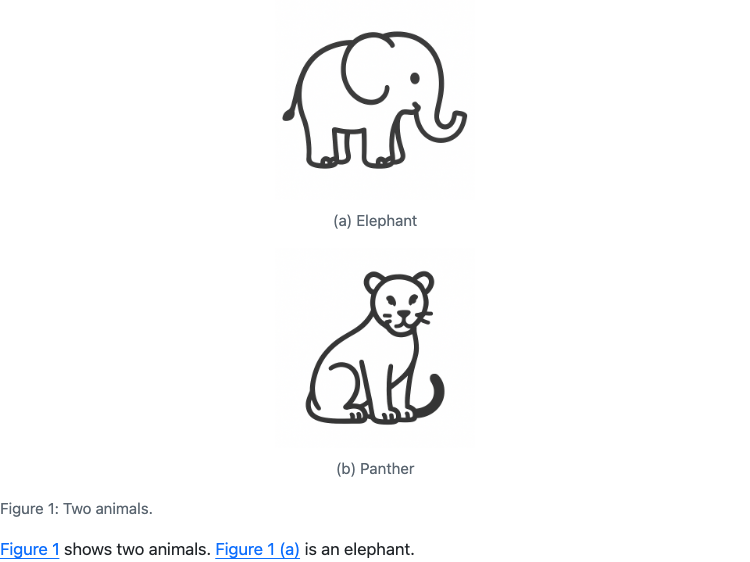
fig-animals example in html output. The sub-figures are labeled (a) and (b), and the sub-reference renders as “Figure 1 (a)”.
When the children become more complicated, we recommend using an explicit fenced div for each one. For example, the general structure becomes:
:::: {#fig-main}
::: {#fig-sub1}
CONTENT 1
Sub-caption 1
:::
::: {#fig-sub2}
CONTENT 2
Sub-caption 2
:::
Main caption
::::Here, CONTENT can be any markdown or code cell output.
We’ve used additional colons (:) to help you see the nesting, but they aren’t required.
If the children all come from one code cell that makes several outputs of the same type (all figures or all tables), you can use the fig-subcap or tbl-subcap code cell options instead. See Section 14.2.4 for figures and Section 14.3.2 for tables.
By default, the children are placed one after the other. To arrange them in rows and columns, nest a fenced div with layout attributes inside the parent, as shown in Section 13.4.
13.3 Captions
A caption has two parts: the caption text you write, and, for cross-referenceable figures and tables, a title and number that Quarto adds (e.g., “Figure 1:”). Table 13.2 outlines the caption tasks we cover in this section.
| To… | Use | See |
|---|---|---|
| Write a long caption, with line breaks or formatting | The last paragraph of a fenced div | Section 13.3.1 |
| Include a computed value in a caption | Inline code in a fenced div caption | Section 13.3.2 |
| Move captions above, below, or into the margin | cap-location, fig-cap-location, tbl-cap-location |
Section 13.3.3 |
Change “Figure” or “Table”, the numbering style, or the : |
crossref options in the document header or _quarto.yml |
Section 13.3.4 |
There are four places to set the caption text:
- Markdown figures: the text in the square brackets,
. - Markdown tables: the line that starts with a colon,
: Caption, directly after the table. - Computational figures and tables: the
fig-caportbl-capcode cell option. - Fenced div syntax (Section 13.1): the last paragraph inside the div, for both markdown and computational content.
The fenced div syntax is more verbose. But because its caption is an ordinary markdown paragraph, not a one-line YAML string, it is useful in two situations: long captions and dynamic captions.
The fenced div syntax only gives you a caption when the div’s identifier starts with a cross-reference prefix, such as fig- or tbl-.
13.3.1 Long captions
A long caption is hard to edit as a code cell option, because it must be a valid YAML string on one line. In a fenced div, the caption is a markdown paragraph, so you can break lines where it makes sense and use markdown formatting. Figure 13.9 shows an example, where { IMAGE } is a markdown image or a code cell that makes a figure (Section 13.1).
::: {#fig-scatter}
{ IMAGE }
Scatter plot of bill length (mm) against bill depth (mm) for three penguin species.
The species form separate clusters:
**Adelie** penguins have short, deep bills,
and **Gentoo** penguins have long, shallow bills.
**Chinstrap** penguins have bills as deep as Adelie penguins, but longer.
:::A caption must be one paragraph. If you leave a blank line in the caption, Quarto uses only the last paragraph as the caption, and puts the earlier paragraphs in the body of the figure or table.
13.3.2 Dynamic captions
A dynamic caption includes a computed value. Inline code expressions, such as `{r} nrow(penguins)`, do not run inside the fig-cap or tbl-cap options, but they do run in the caption paragraph of a fenced div. For example, the caption in Figure 13.10 includes the number of penguins in the data.
::: {#fig-scatter}
{ IMAGE }
Bill length versus depth for `{r} nrow(penguins)` penguins.
:::::: {#fig-scatter}
{ IMAGE }
Bill length versus depth for `{python} len(penguins)` penguins.
:::13.3.3 Caption location
By default, figure captions are placed below figures and table captions are placed above tables. You can control this placement for figures and tables separately with the fig-cap-location and tbl-cap-location options, or use cap-location to control both. Available values for these options are top, bottom, and margin as illustrated for a table in Figure 13.11. The margin value applies only to formats that have a margin, such as html and typst (Section 12.15).
top
bottom
margin
tbl-cap-location set to top, bottom, and margin.
You can set these options at three levels:
In
_quarto.ymlto control all figures and tables in a project:_quarto.yml
cap-location: bottomIn the document header to control all figures and tables in a document:
document.qmd
--- title: "My Document" cap-location: bottom ---On an individual figure or table, to control only that one. Use the code cell option for computational outputs:
```{LANGUAGE} #| label: tbl-island-count #| tbl-cap: "Penguins sampled from the Palmer Archipelago" #| cap-location: bottom # Code to generate a single table ```Or the attribute form for markdown figures or tables:
| Island | Count | |-----------|-------| | Biscoe | 168 | | Dream | 124 | | Torgersen | 52 | : Penguins sampled from the Palmer Archipelago {#tbl-island-count cap-location="bottom"}With the fenced div syntax, put the attribute on the div:
::: {#tbl-island-count cap-location="bottom"} { TABLE } Penguins sampled from the Palmer Archipelago :::
13.3.4 Caption titles and numbering
Quarto adds a title and a number to figures and tables that are cross-referenceable. The title and number appear in the caption, and in the inline reference. You can control these using the crossref options described in Table 13.3 and illustrated for tables in Figure 13.12.
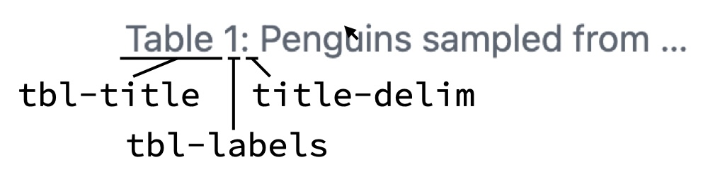
Table caption
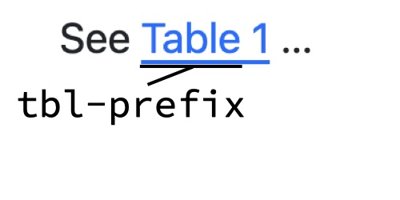
Inline reference
crossref that change caption titles and numbering.
| Option | Controls | Default |
|---|---|---|
fig-titletbl-title |
Title in the caption | FigureTable |
fig-prefixtbl-prefix |
Text before the number in a cross-reference | FigureTable |
fig-labelstbl-labels |
Number style | arabicarabic |
subref-labels |
Number style for sub-references (Section 13.2.3) | alpha a |
title-delim |
Text between the number and the caption | : |
The number style options take these values:
arabic: 1, 2, 3roman: I, II, IIIroman i: i, ii, iiialpha a: a, b, c. To start at a different letter, give that letter, for examplealpha coralpha A.
You can set these options in the document header or in _quarto.yml.
For example, you might change the title of tables to “Sheet”, the prefix to “Sh”, the numbers to Roman numerals, and the delimiter to an em dash:
document.qmd
---
title: "My Document"
crossref:
tbl-title: Sheet
tbl-prefix: Sh
tbl-labels: roman
title-delim: "—"
---Figure 13.13 shows the result.
The crossref options change all figures or all tables in a document. To keep the defaults for figures and tables and add a different kind of numbered element (for example, “Supplementary Table S1”), define a custom cross-reference type. See Custom Cross-Reference Types in the Quarto documentation.
13.4 Panel layout
Panel layouts arrange content in a grid with the layout-ncol, layout-nrow, or layout attributes (Section 12.15). This section covers the most common cases for figures and tables: arranging them in a grid, grouping them under a shared caption, and aligning them in the grid.
13.4.1 Arranging multiple figures and tables
Recall from Section 12.15 that you place content in a grid with a fenced div with the layout-ncol attribute. Put each element in its own fenced div, as shown in Figure 13.14.
::::: {layout-ncol="2"}
::: {}
{ CONTENT 1 }
:::
::: {}
{ CONTENT 2 }
:::
:::::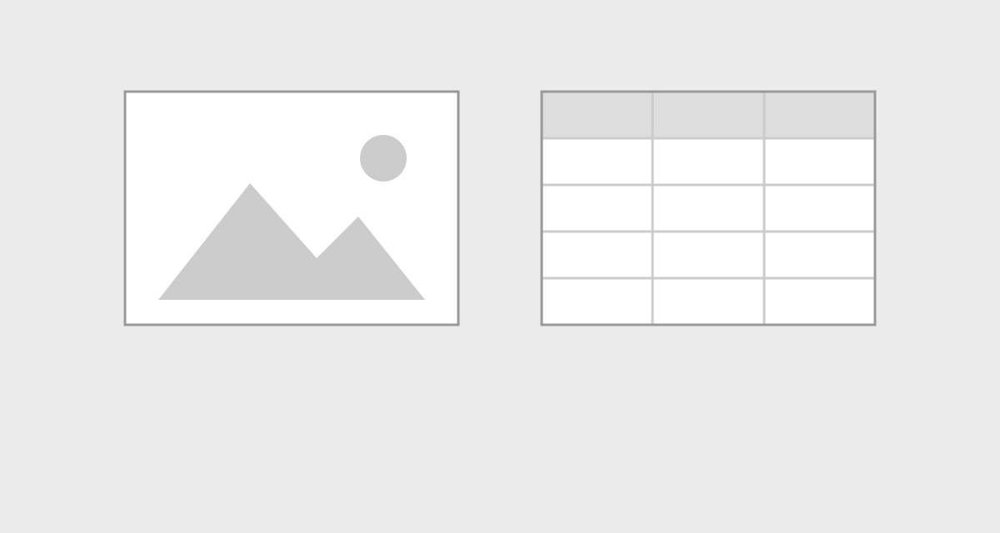
This example arranges the content in two columns (layout-ncol="2"). Increase layout-ncol to add additional columns. If you have more than layout-ncol elements, Quarto adds rows to accommodate them.
The placeholders, { CONTENT 1 } and { CONTENT 2 }, could be anything, including any variation of a figure or table: a markdown image, a markdown table, or a code cell that produces a figure or table.
Neither element in Figure 13.14 is cross-referenceable. To make one or more cross-referenceable elements, add identifiers. Add an identifier with a cross-reference prefix to each inner div to make each item its own cross-referenceable figure or table (Figure 13.15). Add an outer div with an identifier around the layout div to make one cross-referenceable figure from the whole panel (Figure 13.16). Do both to make one cross-referenceable figure with sub-figures (Figure 13.17).
::::: {layout-ncol="2"}
::: {#fig-1}
{ CONTENT 1 }
Caption 1
:::
::: {#tbl-1}
{ CONTENT 2 }
Caption 2
:::
:::::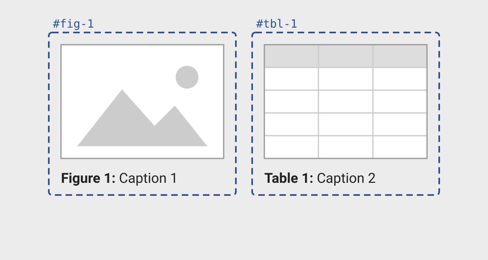
:::::: {#fig-main}
::::: {layout-ncol="2"}
::: {}
{ CONTENT 1 }
:::
::: {}
{ CONTENT 2 }
:::
:::::
Main caption
::::::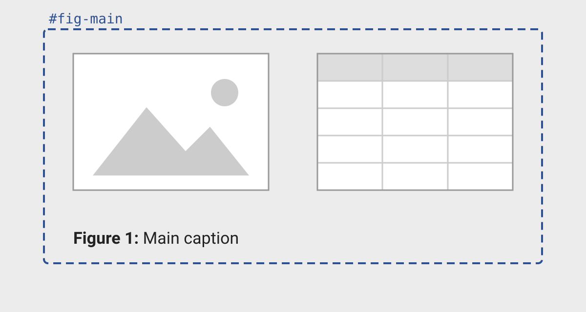
:::::: {#fig-main}
::::: {layout-ncol="2"}
::: {#fig-sub1}
{ CONTENT 1 }
Sub-caption 1
:::
::: {#fig-sub2}
{ CONTENT 2 }
Sub-caption 2
:::
:::::
Main caption
::::::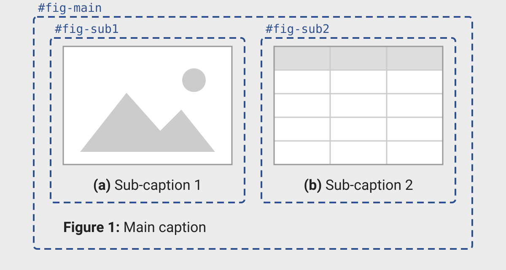
fig- in this example.
In Figure 13.17, use @fig-main to refer to the whole figure (“Figure 1”), and @fig-sub1 to refer to one part (“Figure 1 (a)”), as described in Section 13.2.3.
Mixing cross-reference identifiers and layout attributes or column classes on the same fenced div, e.g., {#fig-id layout-ncol="2"}, often works, but it can give unexpected results in some cases. If it does, use one fenced div for the cross-reference and a separate, nested fenced div for the layout.
If one code cell makes all the figures or tables, you can use layout-ncol as a code cell option instead of a fenced div:
```{LANGUAGE}
#| label: fig-id
#| fig-cap: "Main caption"
#| fig-subcap:
#| - "Sub-caption 1"
#| - "Sub-caption 2"
#| layout-ncol: 2
# Code to generate two figures
```See Section 14.2.4 and Section 14.3.2 for the details. When it is appropriate, the code cell option has concise syntax, but you’ll need to switch to a fenced div if you want to mix figures, tables, markdown, or code cell output in the same panel.
13.4.2 Rows, columns, and custom grids
layout-ncol sets the number of columns, and Quarto adds rows as necessary. layout-nrow sets the number of rows, and Quarto adds columns as necessary. Each item gets the same width.
For different widths, or a different number of items in each row, use the layout attribute. Its value is an array of rows. Each row is an array of numbers that give the relative width of each item. For example, layout="[[1,1],[1]]" puts two items of equal width in the first row and one item at full width in the second row (Figure 13.18).
::::: {layout="[[1,1],[1]]"}
::: {}
{ CONTENT 1 }
:::
::: {}
{ CONTENT 2 }
:::
::: {}
{ CONTENT 3 }
:::
:::::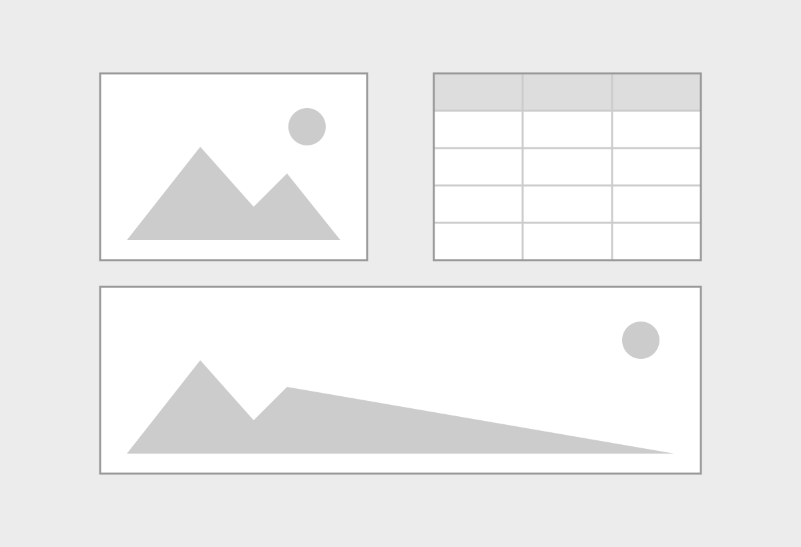
layout="[[1,1],[1]]": two items in the first row and one item at full width in the second row.
As with layout-ncol, add identifiers to the inner or outer divs to make the items, or the whole panel, cross-referenceable.
The numbers are relative, so layout="[[70,30]]" gives a row where the first item is 70% of the width and the second item is 30%. A negative number adds empty space. For example, layout="[40,-20,40]" puts a 20% gap between two items.
13.4.3 Alignment in a panel
Items in a row are frequently different heights, for example, a tall figure next to a short table. Use layout-valign to set the vertical alignment of the items in each row: top, center, or bottom (Figure 13.19).
::::: {layout-ncol="2" layout-valign="bottom"}
::: {}
{ CONTENT 1 }
:::
::: {}
{ CONTENT 2 }
:::
:::::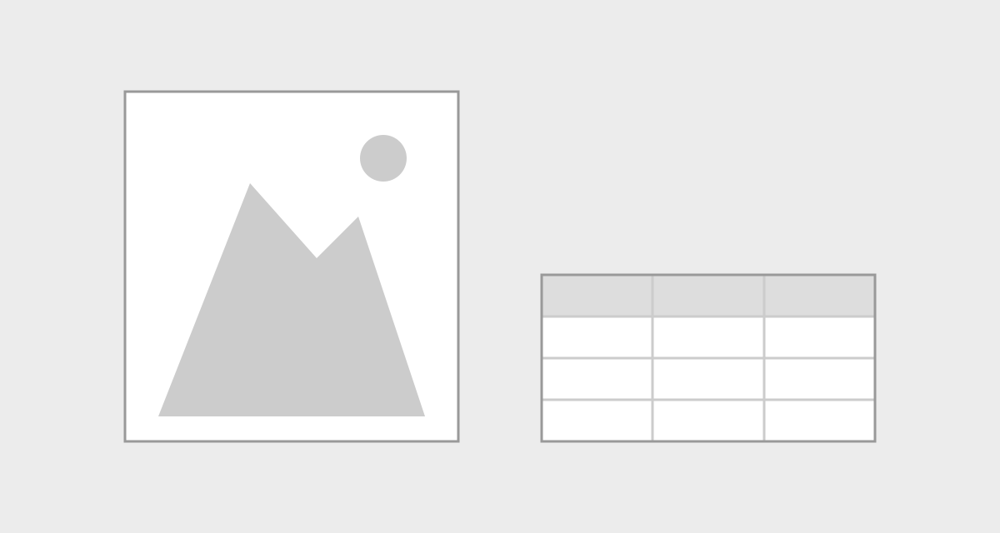
layout-valign="bottom". The bottom edges of the items line up.
Use layout-align to set the horizontal alignment of each item in its cell: left, center, or right. Both attributes are also code cell options.
13.5 Position and alignment
You can move a figure or table into a different column of the page, and align it inside its container. For slides, see Section 11.1.1 for the output-location code cell option, which can put output on the next slide or next to the code.
13.5.1 Position relative to the page: column
Fenced divs with .column- classes put content in different columns of the page, for example the right margin (Section 12.15). To move a figure or table, wrap its fenced div in a fenced div with the class. For example, to give a wide figure the full width of the screen, use .column-screen:
::: {.column-screen}
:::: {#fig-id}
{ IMAGE }
Caption
::::
:::For a small figure that supports the main text, use .column-margin to put it in the margin. The figure keeps its caption and number. As with panel layouts, keep the column class and the identifier on separate fenced divs.
For a code cell, use the column code cell option instead of a class. The value is the class name without the column- prefix:
```{LANGUAGE}
#| label: fig-id
#| fig-cap: "Caption"
#| column: screen
# Code to generate a single figure
```The fig-column and tbl-column code cell options are similar, but they move only the figure or table output, not the other output of the cell. Figure 13.20 shows the result in html output.
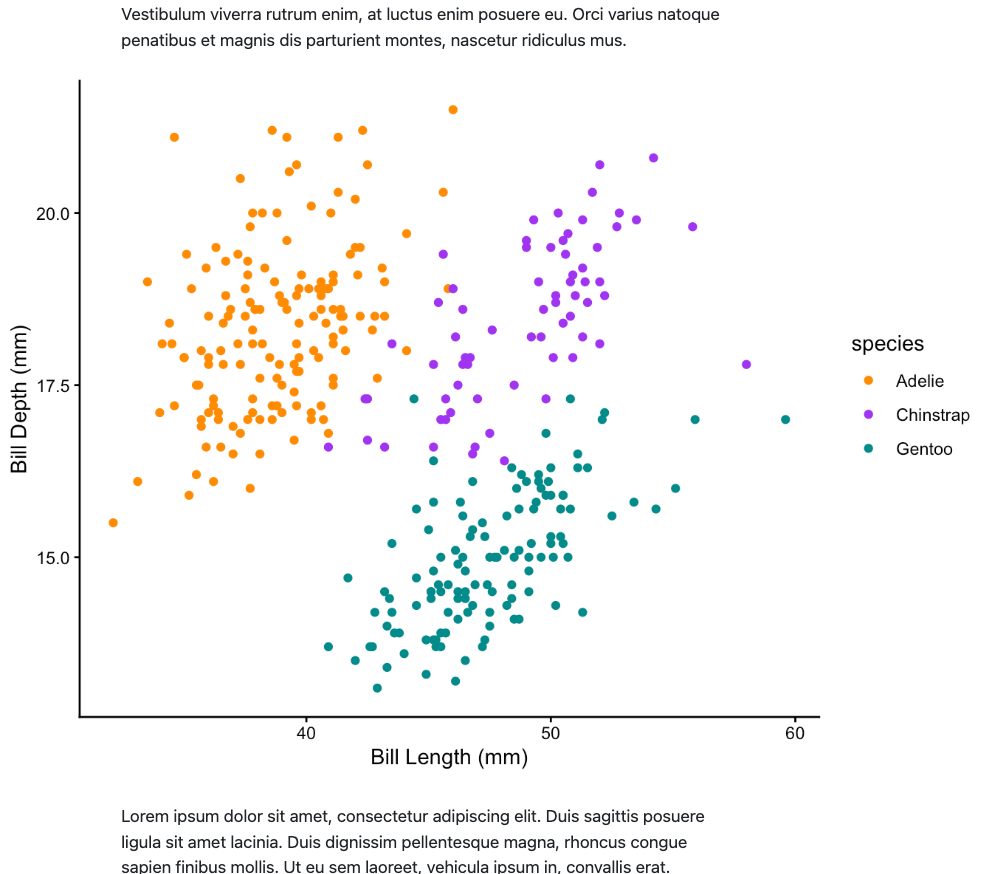
column: screen
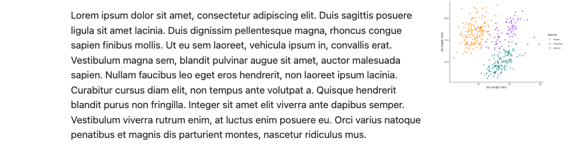
column: margin
html and typst formats.
You can find all the possible column values in the Quarto documentation on Article Layout.
html output
In HTML output, the columns change with the screen size. For example, a small screen has only one column, so all content uses the full width of the screen, whatever its column class.
13.5.2 Figure alignment: fig-align
Every figure sits in a container. By default, the container is the width of the body text, but you can change this if you put the figure in a column (Section 13.5.1). Figure alignment is the horizontal position of a figure in its container.
Use fig-align to change the alignment. Its values are default (the default for the output format), left, center, and right. Figure 13.21 shows the effect of left, center, and right.
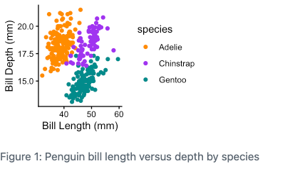
fig-align: left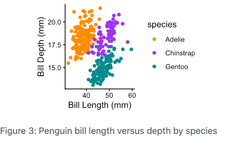
fig-align: center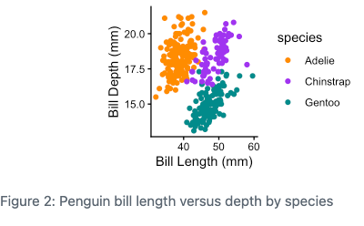
fig-align: rightfig-align settings: left, center, and right.
To align all the figures in a document, set fig-align as a document option (Snippet 13.1). This applies to figures from markdown and from code cells.
fig-align document option to set the alignment of all figures in a document.
document.qmd
---
fig-align: left
---To align one figure, and override the document option, add a fig-align attribute to a markdown image:
{#fig-id fig-align="right"}Or, for a figure from a code cell, use the fig-align code cell option:
```{LANGUAGE}
#| label: fig-id
#| fig-cap: "Caption"
#| fig-align: right
# Code to generate a single figure
```13.6 Table column alignment and widths
Inside a table, each column has an alignment and a width. Column alignment is the horizontal position of the content in each cell of the column. Column width is the proportion of the table width that the column uses. By default, the output format sets the alignment, and the widths depend on the content of the columns.
How you change alignment and width depends on how you make the table: in markdown, with a code cell that outputs a markdown table, or with a package that outputs an HTML table.
13.6.1 Markdown tables
To align the columns of a pipe table, add colons to the separator row. A colon on the left aligns the column to the left, a colon on the right aligns it to the right, and colons on both sides center it. This table aligns the first column to the left, the second column to the center, and the third column to the right:
| Algorithm | Accuracy | Time |
|:--------------------|:--------:|------:|
| Random Forest | 96.7% | 0.12s |
| Logistic Regression | 81.2% | 0.08s |
| Linear Regression | 74.8% | 0.05s |To align the columns of a list table, add an aligns attribute to the .list-table div. Its value is a comma-separated list with one letter per column: l (left), c (center), r (right), or d (default). This list table has the same alignment as the pipe table above:
::: {#tbl-perf-align .list-table header-rows=1 aligns="l,c,r"}
Training performance
* - Algorithm
- Accuracy
- Time
* - Random Forest
- 96.7%
- 0.12s
* - Logistic Regression
- 81.2%
- 0.08s
* - Linear Regression
- 74.8%
- 0.05s
:::To set column widths, use tbl-colwidths. Its value is an array of percentages, one per column. For a pipe table, add a tbl-colwidths attribute after the caption. This table gives the first column 80% of the width, and the other two columns 10% each:
| Algorithm | Accuracy | Time |
|:--------------------|:--------:|------:|
| Random Forest | 96.7% | 0.12s |
| Logistic Regression | 81.2% | 0.08s |
| Linear Regression | 74.8% | 0.05s |
: {tbl-colwidths="[80, 10, 10]"}For a list table, you can add the same tbl-colwidths attribute to the .list-table div. Or, use the list table attribute widths, with a comma-separated list of widths:
::: {#tbl-perf-widths .list-table header-rows=1 widths="80,10,10"}
Training performance
* - Algorithm
- Accuracy
- Time
* - Random Forest
- 96.7%
- 0.12s
* - Logistic Regression
- 81.2%
- 0.08s
* - Linear Regression
- 74.8%
- 0.05s
:::To set the column widths of all the markdown tables in a document, set tbl-colwidths as a document option (Snippet 13.2). A tbl-colwidths attribute on a table overrides the document option, but a widths attribute does not.
tbl-colwidths document option to set the column widths of all markdown tables in a document.
document.qmd
---
tbl-colwidths: [80, 10, 10]
---13.6.2 Tables from code cells
A code cell can output a markdown table, for example with knitr::kable() in R or tabulate() from the tabulate package in Python. There is no code cell option for column alignment. Instead, set the alignment with the function that makes the table. In Snippet 13.3, the align argument to knitr::kable() and the colalign argument to tabulate() align the species column to the left and the count column to the right.
```{r}
penguins |>
count(species) |>
knitr::kable(align = c("l", "r"))
``````{python}
from tabulate import tabulate
from IPython.display import Markdown
summary_table = (
pl.DataFrame(penguins)
.group_by('species')
.len()
)
Markdown(tabulate(summary_table.to_pandas(),
tablefmt='pipe', headers='keys', showindex=False,
colalign=('left', 'right')))
```To set column widths, use the tbl-colwidths code cell option (Snippet 13.4). It overrides the document option.
tbl-colwidths code cell option to set the column widths of a markdown table from a code cell.
```{r}
#| tbl-colwidths: [25, 75]
penguins |>
count(species) |>
knitr::kable()
``````{python}
#| tbl-colwidths: [25, 75]
from tabulate import tabulate
from IPython.display import Markdown
summary_table = (
pl.DataFrame(penguins)
.group_by('species')
.len()
)
Markdown(tabulate(summary_table.to_pandas(),
tablefmt='pipe', headers='keys', showindex=False))
```13.6.3 HTML tables
tbl-colwidths applies only to markdown tables. A package that makes HTML tables, such as gt in R or great_tables in Python, styles the table itself. Use the functions of the package to set the alignment and width of the columns.
In Snippet 13.5, cols_align() aligns the count column to the right, cols_width() gives the species column 25% of the width and the count column 75%, and tab_options() makes the table the full width of its container.
```{r}
penguins |>
count(species) |>
gt() |>
tab_options(table.width = pct(100)) |>
cols_align(align = "right", columns = n) |>
cols_width(
species ~ pct(25),
n ~ pct(75)
)
``````{python}
(
pl.DataFrame(penguins)
.group_by('species')
.len()
.pipe(GT)
.tab_options(table_width="100%")
.cols_align(align="right", columns="len")
.cols_width(
species="25%",
len="75%"
)
)
```13.7 Wrapping Up
Everything in this chapter applies to computational figures and tables too. In Chapter 14, you’ll learn the code cell options that control them, and how to troubleshoot them when the output isn’t what you expect.